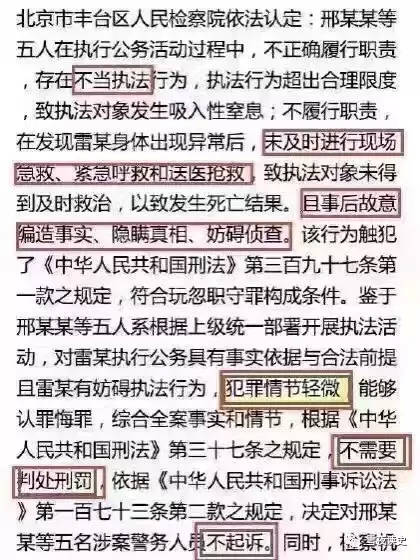

理性荒唐|老杨再谈雨田之死
长沙杨飞
2016/12/30 update: 雷洋家属已经决定接受赔偿不再起诉。如果您已经看过前面部分，请直接拉到后面的PS。（另：雨田即为雷洋，因本文被封，不得已改名）
昨天下午是中国司法界具有历史意义的一刻。举国关注的雷洋案终于有了初步结果。
雷洋，湖南澧县人，中国人民大学2009级硕士研究生，生前供职于北京国资委。2016年5月7日晚，雷洋因“涉嫌嫖娼”被警察盘问，发生肢体冲突后死亡。
昨天下午，北京市丰台区检察院对雷洋案做出了裁决，认定五名涉案警察犯玩忽职守罪，但因为情节轻微，所以不予起诉。
说实话，我被这一新闻雷到了。玩忽职守，致人死亡，但情节轻微？我左思右想没明白这个逻辑。这裁定书原文是这么写的：

请注意红框里面的字句，“不当执法”，“未及时抢救”，“编造事实、妨碍侦查”。具体检察院是这样描述的：“膝盖压颈、摁压四肢、掌掴面部、手铐约束、脚踩颈面部、强行拖拽上车”，导致当事人呕吐窒息。警察没有及时施救，并延误送医。事后，五名警务人员合伙编造故事，隐瞒真相，妨碍侦查。鄙人愚见，就玩忽职守罪来说，这几项并不能说明情节轻微。
还有一种情况，如果没有造成严重后果，比如当事人只是受了轻伤，倒是可以说情节轻微。但是请看《中华人民共和国刑法》第397条之规定：“国家机关工作人员滥用职权或者玩忽职守，致使公共财产、国家和人民利益遭受重大损失的，处三年以下有期徒刑或者拘役；情节特别严重的，处三年以上七年以下有期徒刑。”当事人直接死亡，这明明是情节特别严重，怎么能说是“情节轻微”呢？
检察院把邢某某是执行公务作为“情节轻微”的解释之一，这属于偷梁换柱。对玩忽职守罪，执行公务乃是必要条件。不执行公务根本不能构成玩忽职守罪。如果是诉故意伤害或过失杀人罪，执行公务倒是可能成为减轻处罚的理由之一。但是对玩忽职守罪，执行公务并不能作为情节轻微的理由，否则全国的玩忽职守罪都得从轻处理。这显然是荒谬的。
雷洋同志委实死得冤。现在只有警方单方面的说法，并不能认定他有嫖娼。就算按照现在警方的说法，他也并没有实质性性行为，一个口活blow
job而已。如果这也算嫖娼的话，雷洋才是货真价实的情节轻微。
但是雷洋反抗执法，有暴力行为，这一点是否构成玩忽职守“情节轻微”的理由？个人认为也不能。虽然警察的工作之一是以暴制暴，但嫖娼只是轻微违法，它是治安管理条例管辖范畴，并不构成犯罪。对于轻微的违法不得采用极端手段，这是司法常识。
这就是为什么交通警察路上检查，遇到逃跑的车辆一般不得追击。《交通警察执勤执法规范》第73条原文是：“除机动车驾驶人驾车逃跑后可能对公共安全和他人生命安全有严重威胁以外，交通警察不得驾驶机动车追缉，可采取通知前方执勤交通警察堵截，或者记下车号，事后追究法律责任等方法进行处理。”
嫖娼逃跑，是否会对公共安全和他人生命安全构成严重威胁？这个答案显然是否定的。邢警官和四名下属用对付重大犯罪分子的方法对付嫖娼嫌疑人，手段恶劣并直接导致当事人死亡，最严重的情节也不过如此了。
话说回来，警察在表明身份之后，雷洋还试图逃跑并奋力反抗，这是他的非理性之处，严重不值得提倡。按我的理解，警察随后的暴力执法属于某种程度的正当防卫，但明显防卫过当，可算过失杀人。
至于雷洋吃得太饱也出现在检察院的正式文稿里面，这实在荒唐。按这意思，以后居民吃饱之后不得随意行走，得消化之后才能上街？这和常识不符，人类都是先上街散步然后才消化的。
至于没有及时抢救，那不用说属于警察严重失职。别说只是轻微违法的嫌疑人，就是已定罪的重刑犯，只要他有身体不适，那都得及时送医。
至于编造故事、隐瞒真相、妨碍侦查之类，我就不说了吧，这只能作为罪加一等的情况，或者另立伪证之罪。“情节轻微”从何说起？
综上所述，鄙人认为雷洋一案若诉过失杀人罪，它也许有情节轻微的理由；但是以玩忽职守罪来说，它只有情节严重、数罪并罚的理由。
本人并非法律界人士，这些道理简单明了，普通人都能理解，但是作为法律专业人士云集的首都检察院，却能得出“情节轻微”、不予起诉的结论。他们的逻辑在哪里？
个人觉得，昨天下午是中国司法界一个历史性的时刻，它标志着中国司法正式进入了一个无逻辑、无理性的新时代。
好吧，我可能要纠正一下，从另外一个角度说检察机关的决断也是理性的。他们的理性在于：稳定压倒一切。维稳是政府工作的重中之重，而警察是维稳的关键力量。雷洋一案，全国几百万警察都在关注。对涉事警察不予起诉，传达的信号很清楚：只要是执行公务，就请放开手脚，弄死了人也没事，一律“情节轻微”。
但是除了警察，全国上亿人民也在关注雷洋案。此案的信号对老百姓也很清楚，雷洋可以“嫖娼”死，任何人也可以死了白死，警察不负任何刑事责任。北京检察院的这个非理性决断给警察吃了一颗定心丸，也给全社会增加了极大的不安定因素。
我个人观点，这种裁决短期看来维护了警察系统的稳定，但是从长期看来，这种不讲道理、不顾逻辑、叙述的事实和得出的结论完全背道而驰的做法，对于司法界来说乃是自扇嘴巴、自取其辱。
另外提及一点。昨天下午新闻出来之后，国内互联网进行了严格管制。发布权威消息的北京市检察院官方微博关闭了评论。新浪微博并禁止搜索“雷洋”二字。所有的大型门户网站一律只发官方通稿，并禁止用户评论。少数可以评论的都一面倒地支持检察院。这属·于典型的水军运作。Plus，昨晚对雷洋一案发表意见的数篇文章在微信朋友圈均遭404处理。
新浪微博搜索截图
这种做法让人很迷惑。政府一面说要虚心听取群众意见，一面又禁止群众发声，这实在荒唐，未免让人有精神分裂之感。我估计有关部门也可能知道这种裁决难以服众，不可开放评论，以免被吐沫淹死。
昨天有司的裁决并不是雷洋案的终结。家属若是不服，可以提起刑事自诉附加民事赔偿。人命案，不立案貌似不太可能。期待不远的将来能有真正的公开庭审，那就有得好看了。
雷洋家门口这些足浴店警察常来蹲守，然而好几年却一点事都没有。一般人被抓后都是交钱了事，警察这次没想到碰到了一个当场不服的愣头青。警察之所以要留着这些足浴店，业内人士都知道，这是他们招财进宝的重要手段。中国的法律之所以要保留处罚卖淫嫖娼的条款，其原因大家也知道。请见广州区伯在长沙的案例。只要看你不爽，我就有办法让你嫖娼。不服是吧？小心饭后窒息
。
一张床，一间房，一不偷二不抢，劳动养活自己，减轻社会压力，这种行为何罪之有？我个人一直主张卖淫嫖娼非罪化。成年人的任何性行为均应合法，不管是否涉及金钱交易。嫖娼顶多是一个道德问题。法律要来管道德问题，社会只会越管越乱。
警察热衷于抓嫖毫无疑问加剧了警界的腐败程度。现在大城市治安一塌糊涂，坑蒙拐骗遍神州，钱包手机不翼而飞大家都懒得报案了，然而大量警力却耗费在足浴店门口，耗费在居民的裤裆里，甚荒唐。
荒唐其一：打飞机却丢了身家性命；
荒唐其二：致人死亡但却情节轻微；
荒唐其三：故意伪证但却不予追究；
荒唐其四：听取意见但却删帖禁评。
这真是：
满纸荒唐言，
一把辛酸泪。
盛世中国梦，
谁解其中味？
杨飞，
2016/12/24，长沙
PS，昨天（2016/12/29）消息，雷洋的家属决定接受国家赔偿，不起诉。警方赔了多少钱并没有公布，坊间传闻是人民币一千两百万。
除非再有重大爆料，这个案子应该到此为止了。但此案诸多疑点并没有得到消除。口活带套，完事之后还保留客人的体液作为证据，很多都不符合常识，以至于有人推论警察可能只是简单的抓错了人，最后把人弄死了。人命案成了一桩糊涂案，有钱有权就无往而不利，中国大陆的国情颇让人感叹。
雷洋的家属决定要钱，不再追寻亲人被害的真相，有人对此颇有微言，但我认为这是家属的自由。话说回来，某个叫秋菊的村妇更值得尊敬。人活一张脸，树活一张皮，秋菊虽然穷，但她死活就是要个说法。不过电影归电影，在现实生活中，尤其是在乱世，一个人的命在理论上是可以计价的。具体怎么算钱，推荐阅读吴思的《血酬定律》。
让我们看看海峡对岸的一个类似案例。2013年6月，台湾一个叫洪仲丘的士兵被虐致死，台湾民众喊出了“没有真相就没有原谅”的口号，几十万人上街游行包围总统府，最后总统道歉，国防部长下台，国家赔偿1亿台币，18名军人被检方起诉。相比台湾官方的脸面尽失，雷洋案看起来大陆官方获得了胜利，但究其社会影响来说，事情并不完全如此。让我们盘点一下战况。
首先，警察的声誉严重受损。此案让公众知道，原来警察很善于合伙编造谎言。明明是暴力夺命，偏偏说是心脏病突发。睁着眼睛说瞎话啊。
第二，央视和媒体的声誉严重受损。在检察院和法院都还没有发话的时候，中国大陆的官方媒体尤其是中央电视台有一个本事，能让嫌疑人在电视上先认罪。薛蛮子嫖娼就是这么处理的。这次的涉案警察也上了央视。现在回放的话，央视这是帮人撒谎，自取其辱。以后电视认罪估计没人再信了。睁着眼睛说瞎话啊。
第三，中国司法系统的声誉严重受损。原因不啰嗦了，为什么情节不轻微，前文已经讨论了两千字。此种大案，人命关天，检察院都可以闭着眼睛说瞎话，以后任何案件，还会有多少人相信公检法？
第四，党和政府的声誉严重受损。雷洋一案，丰台区检察院不可能自己做决定。这是常识。就此案的影响力来看，北京市政法委可能也无权拍板，办案的指示可能来自高层。中国政府钱多，看起来花钱就堵上了所有人的嘴，但实际上这是一招臭棋。葫芦官乱断葫芦案，一笔糊涂账，正义没有得到伸张，司法公平无望。君子不立危墙之下，和雷洋类似的中产阶级们可能要加快用脚投票的步伐了。
我们之所以需要公检法等国家机器，就是为了明辨是非，惩罚坏人，维护社会的公平正义。假如国家机器不再维护公平和正义，在理论上来说，该机器的使命已经结束。要么大修，要么买新机器。
长话短说吧。雷洋一家应该也不是赢家。虽然得到了一大笔钱，但亲人到底是怎么死的依然不明。话说1200万也就能在北京买套大点的住房而已。这套房子是用亲人的命换来的，要是我的话，住这样的房子我都怕闹鬼。
雷洋一案，我个人观点，邢永瑞等五名警察并非故意取人性命。很可能只是出手太重，不慎致命，按过失杀人或者玩忽职守论罪应该是合适的。如果就事论事，秉公办案，这事也起不了多大的风波。现在这种处理，民心尽失啊。机关算尽太聪明，反误了卿卿性命。貌似官方得胜，实则满盘皆输，可能移民公司是唯一的赢家吧。
杨飞，2016/12/30补记
关注老杨
杨飞作品集：www.999kg.com
微信：yangfei789288
微信公众号：老杨书吧
新浪微博@长沙杨飞
推特Twitter@feiyang17
Facebook：yangfei999999@hotmail.com